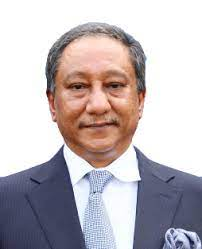

 Papon was born to Zillur Rahman, who later became president of Bangladesh, and Ivy Rahman, a Bangladesh Awami League politician. He has 2 sisters Tania Bukth and Tonyma Rahman. His father, Zillur Rahman, was former president of Bangladesh . He completed his MBA from Institute of Business Administration, University of Dhaka.Papon was elected as the president of Bangladesh Cricket Board in October 2013. He was preceded by AHM Mustafa Kamal who was selected the Vice-President of ICC. He was elected unanimously He is the first elected president of the board with his predecessors being appointed by the Bangladesh Government. In the election, Papon competed with Saber Hasan Chowdhury. He criticized Shakib Al Hasan and suspended him over discipline issues. He is a member of parliament from Bangladesh Awami League. He is the managing director of Beximco Pharmaceutical Limited and Shinepukur Ceramics Limited and a director of Beximco Group. He was the President of Abahani club for almost a decade. He headed a subcommittee in the parliament formed to investigate the manufacturing practices of pharmaceutical companies in Bangladesh. In 2018, he became the president of the Asian Cricket Council.
Copyright © 2022. Al rights reserved by Bangladesh Cricket Board